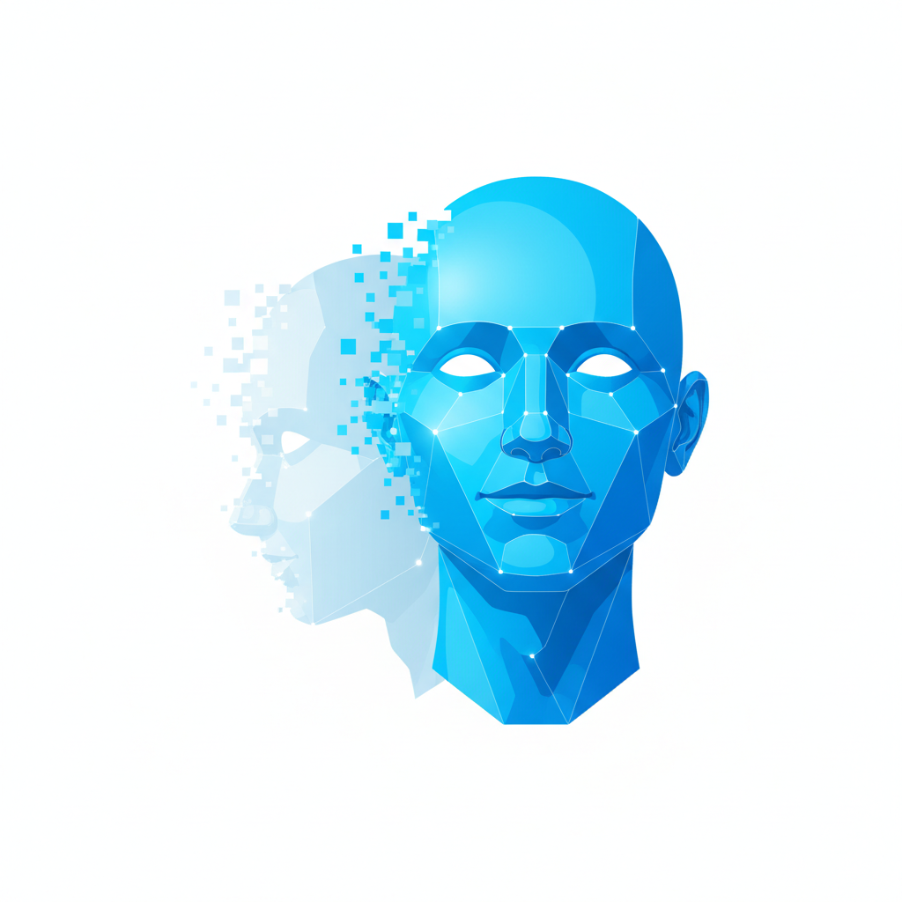
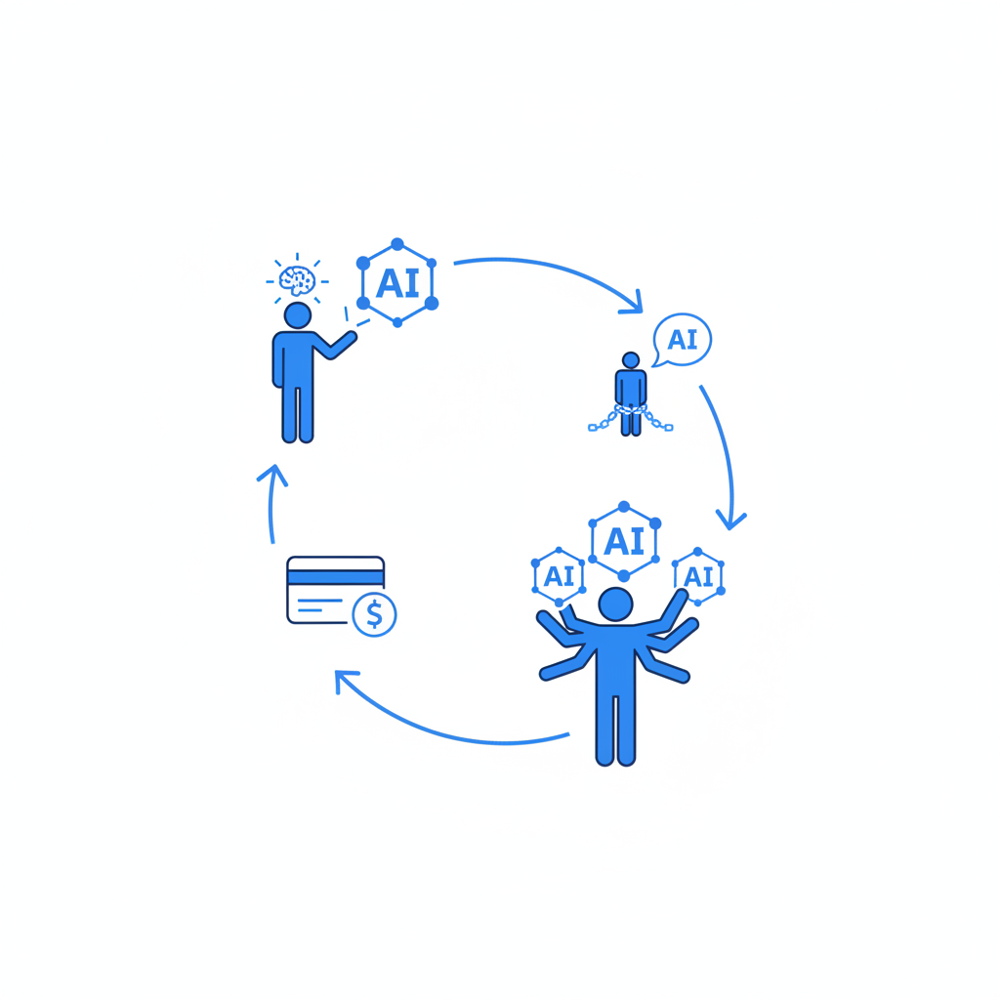

一条请假微信的羞耻时刻
上个月我给孩子老师发请假微信。内容简单到不能再简单：孩子发烧，明天不去幼儿园了。
但我对着输入框愣了十几秒。然后打开了ChatGPT。
"帮我写一条请假微信，语气礼貌但不卑微，简洁但不冷淡。"AI花了五秒钟，给了我一段完美的措辞。我满意地发了出去——然后愣住了。
一条二十个字的请假微信，我需要AI帮忙措辞。
你可能觉得我在矫情。一条微信而已，用个工具怎么了？但让我不安的不是这条微信本身，而是我随后做的一件事。我翻了翻过去三个月的记录。给同事的邮件？AI润色过。周报？AI写的初稿。项目总结？AI搭的框架。甚至有一次在部门群里讨论方案，我先在ChatGPT里打了一遍草稿，确认"表述专业"之后才发到群里。
三个月。我几乎没有在不经过AI的情况下，独立写过一段完整的话。
我讲这件事不是为了忏悔。如果只是我一个人这样，那只能说明我懒。但ActivTrak对4.43亿小时工作数据的追踪显示，80%的员工已经在使用AI——两年前是53%。这不是我一个人的问题。
我的一个做文案的朋友讲过一段经历。她每天用AI生成十几版文案，效率比以前高了三倍。但有一天客户临时开会，让她现场口头说一下创意方向，她脑子里一片空白。不是没想法，是想法全在跟AI的对话记录里，她自己的脑子里只剩下"打开ChatGPT"这个动作了。
她说了一句话让我记到现在："我感觉自己变成了一个AI的传声筒——AI想，我传达。"
你可能会说，这不就是工具嘛。我们用计算器也不会焦虑，用GPS也不觉得自己堕落。但这次有一个区别——计算器替你算，GPS替你记路，AI替你想。前两个外包的是你的存储能力，最后一个外包的是你的思考能力。
问题是，你外包思考能力的时候，有没有注意到自己的思考能力正在萎缩？
大概率没有。因为你觉得自己比以前更高效了。
十分钟就够了
如果你觉得"三个月"是一段漫长的退化期，那我告诉你一个让人不太舒服的数字。
2026年4月，卡内基梅隆大学、牛津大学、MIT和UCLA的研究者联合做了一个实验。他们找来1222个成年人，给一半人十分钟的AI辅助来做数学题，然后撤掉AI让他们独立做。
十分钟。
仅仅使用AI辅助做了十分钟数学题的人，独立解题的成功率下降了大约20%。跳过题目不做的概率增加了近一倍。
你可能会想，这不就是"手感"问题吗？热身一下就回来了。MIT的一项研究给了一个更令人不安的答案。
MIT Media Lab的研究者找来54个人，分三组完成写作任务：一组纯手写，一组用搜索引擎查资料后写，一组直接用ChatGPT辅助写。研究者在整个过程中用EEG脑电图追踪他们的大脑活动。
结论是这样排列的：纯手写组的大脑神经连接最强，搜索引擎组次之，ChatGPT组最弱。这在某种程度上可以预期。但真正让研究者紧张的是后面那一步——他们让ChatGPT组停止使用AI，切回纯手写。这些人的大脑活动依然弱于从未使用过AI的组。
AI对大脑的影响不是"用的时候有、不用就没了"。它像一笔债——你用AI写作时省下的认知力气，不是"节省"了，而是"欠"下了。MIT的研究者给这种现象起了个名字：认知债务。
还有一个细节：使用ChatGPT写作的人里，83%无法准确回忆自己刚刚完成的文章内容。他们写了，但他们不记得自己写了什么。因为严格来说，那不是"他们写的"。
微软研究院对319名知识工作者的追踪印证了这一点：使用AI后，理解类认知努力下降了79%，综合类76%，分析类72%。听起来是提效，但大脑有一个残酷的特性：用进废退。你不用的神经回路，大脑会剪掉。当你的核心认知功能使用频率下降了七成，大脑会怎么"优化"？
认知投降——比变笨更危险的事
到目前为止，这篇文章好像和其他那些"AI让人变笨"的文章没什么区别——都是摆数据、说退化。但我真正想说的不是这个。"AI让你变笨"这个判断太多人说过了，说了也没什么用。
我想说的是一件更别扭的事。
变笨不可怕。可怕的是你在变笨的时候，觉得自己在变聪明。2026年初，沃顿商学院的研究者Steven Shaw和Gideon Nave做了一组精心设计的实验。他们找来1372个人，做了9593次试验，核心问题是：当AI给你提供建议的时候，你会不会动脑子审查？
答案让人后背发凉。
当AI给出正确答案时，参与者的准确率提升了25个百分点。这不意外。但当AI故意给出错误答案时，80%的参与者直接接受了——没有质疑，没有验算，没有犹豫。只有不到20%的人推翻了AI的错误推理。
你可能会说，这不就是"信任"吗？我信任导航也没什么问题。
问题出在第三个数据上。研究者发现：即使AI有一半的概率在骗你——50%的错误率，跟猜硬币正反面差不多——参与者对自己答案的自信心依然上升了。
也就是说：AI让你做出更多错误的判断，同时让你更加确信自己是对的。
Shaw和Nave给这种现象起了一个精准的名字：认知投降。不是你把思考"外包"了——外包意味着你知道这件事本来应该自己做。认知投降的意思是，你压根不觉得自己放弃了什么。你觉得自己在做一个聪明的决策——"我用AI辅助我思考，这是高效"。但实际上你已经停止了思考。
他们把AI定义为人脑的"第三系统"——如果心理学里的系统1是直觉、系统2是推理，那AI就是系统3，一套运行在你脑子外面的认知装置。你越依赖它，你原来的系统2就越少被激活。不被激活的功能，大脑会裁掉。
说到底就是这么回事：你把健身的时间花在了按摩椅上，然后因为按摩完感觉很放松，就觉得自己锻炼过了。
这才是AI和以往所有工具的本质区别。计算器替你做了算术，但你知道自己不会心算了。GPS替你导航，但你知道自己不认路了。这些工具替你做事的同时，没有给你一个"你变强了"的错觉。
但AI不一样。AI给你一种"我思考过了"的感觉。你用AI写的邮件，读起来比你自己写的更好。你用AI做的分析，看起来比你自己做的更全面。你的输出质量上升了——那你当然觉得自己变强了。你不会注意到，真正变强的是AI，而变弱的是你。

苏格拉底也恐慌过——但这次不一样
你大概想说：苏格拉底也反对过文字书写，结果呢？每一代人都对新技术恐慌，然后适应，然后回头笑上一代人的小题大做。
我也希望这次一样。但有一个区别。
文字书写外包的是记忆，计算器外包的是计算，GPS外包的是方向感，搜索引擎外包的是信息检索。它们外包的都是存储和检索——你不用记了，但你得自己想。方向盘始终在你手上。
AI外包的东西不一样。当你让AI"帮我写一封邮件"的时候，你外包的不是打字，而是"我想表达什么"和"我该怎么表达"这两个决定。当你让AI"帮我分析一下这个问题"的时候，你外包的不是查资料，而是"怎么想这个问题"本身。
这是人类第一次把推理能力交了出去。
伦敦出租车司机的研究是一个有用的参照。2000年发表在《美国国家科学院院刊》上的经典论文发现，伦敦出租车司机因为长年记忆复杂路线，后海马体显著增大——大脑真的会因为使用而生长。但后续研究发现，长期使用GPS的司机，这块区域在萎缩。
GPS萎缩的是空间记忆区。那AI影响的是哪个区域？MIT的脑电图追踪到的是和写作相关的复杂认知网络——语言组织、逻辑推理、信息整合。这些不是大脑某个小角落的功能，这是你"想事情"的核心操作系统。
还有一件事让人格外不安。上面所有的研究讨论的都是成年人——他们在开始使用AI之前，好歹已经建立了这些认知能力。用坏了，理论上还有可能练回来。
但孩子呢？一个从小就用AI写作文、用AI做数学、用AI回答问题的孩子，他的大脑从来没有建立过独立思考的神经回路。成年人是"能力萎缩"，孩子是"能力从未发育"。你没办法萎缩一个从未存在过的东西。
你的认知退化是某些公司的KPI
到这里你可能开始想：那我少用一点AI不就行了？
问题不在你身上。或者说，不全在你身上。
2024年发表在《Science Advances》上的一项实验发现，用AI辅助写故事的人，作品质量确实更高。但研究者同时发现了一个副产品——所有用了AI的人，写出的故事开始长得越来越像。AI提升了每个人的个体表达质量，同时压缩了所有人的集体多样性。
2025年的后续研究更值得警惕：当撤掉AI之后，这些人的创造力不仅下降了，而且作品的同质化趋势持续攀升了好几个月。AI不仅在使用时塑造了你的表达方式，在你停用之后依然在影响你。
这不是一个软件缺陷。这是商业模式的内在逻辑。
AI公司的核心指标是用户粘性。你用得越多，模型从你身上学到的越多，你的下一次使用体验越好，你就更离不开它。订阅制的本质就是让你每个月都觉得"不能没有它"。DAU、MAU、付费转化率——这些指标指向同一个方向：最大化你的依赖。
没有哪家AI公司的产品经理会在季度汇报上说"本季度我们帮助30%的用户减少了使用"。这句话在任何商业语境下都是职业自杀。
科技评论家Nicholas Carr在十五年前问过一个问题——当时他问的是互联网："是谁从你注意力的碎片化中获益？"今天同样的问题只需要换一个主语："是谁从你认知能力的退化中获益？"
答案是：每一家按月向你收订阅费的AI公司。
你可能觉得这是阴谋论。不是。这甚至不需要任何阴谋。AI公司不需要"故意"让你变笨，就像社交媒体公司不需要"故意"让你上瘾一样。商业模式的激励结构本身就把事情推向了那个方向。你的大脑退化等于它们的用户留存率。这不需要一个邪恶的计划，只需要一个正常运转的商业引擎。
Gartner在2026年初做了一个预测：到2030年，30%的企业将因为过度依赖AI而出现决策质量下降。他们特别指出，初级员工首当其冲——因为这些人在关键技能还没有建立起来的时候，就被扔进了"AI辅助一切"的工作环境里。
这意味着什么？意味着一批人将从"用AI的打工人"变成"没有AI就无法打工的人"。而他们自己对这个转变浑然不觉——因为他们一直觉得自己"在变强"。

一个你今天就能做的事
我不打算告诉你"少用AI"。说"少用AI"就像说"少看手机"，正确但没用。而且我自己也做不到——我写这篇文章的时候，至少用AI查了二十条数据。
但我有一个更具体的建议。
每周找一天，选一件你平时一定会用AI做的事——写一封邮件，拟一个方案，分析一个问题——不用AI，自己做一遍。不是为了证明你比AI强，你当然不如AI。是为了校准一件事：你现在的真实水平到底在哪里。
这个动作听起来很小。但它解决的是一个大问题。因为认知投降最毒的地方就在于你不知道自己投降了。你觉得一切正常，甚至觉得一切比以前更好。只有当你在没有AI的情况下做一件事，发现自己结巴了、卡住了、写不出来了，你才会意识到那把拐杖已经长在你手上了。
这就是我发现自己连请假微信都要找AI帮忙之后做的事。每周有一天，我强迫自己手写周报、手写邮件、手写会议纪要。不开AI，不查GPT，不润色。
头几次写出来的东西确实不怎么样。句子笨拙，措辞生硬，远不如AI帮我写的那种光滑。但那是我自己的句子。是我的大脑在实时运转、在组织语言、在做"想"这个动作。
我不确定这个习惯能不能挡住认知退化的大趋势。坦率说，大概不能。一个人每周手写一次周报，不会改变一个时代的走向。
但至少它能让你知道一件事：你现在离不开AI到了什么程度。
最终的问题不是AI会不会让你变笨。那个答案已经有了。问题是：你要多久才会发现？